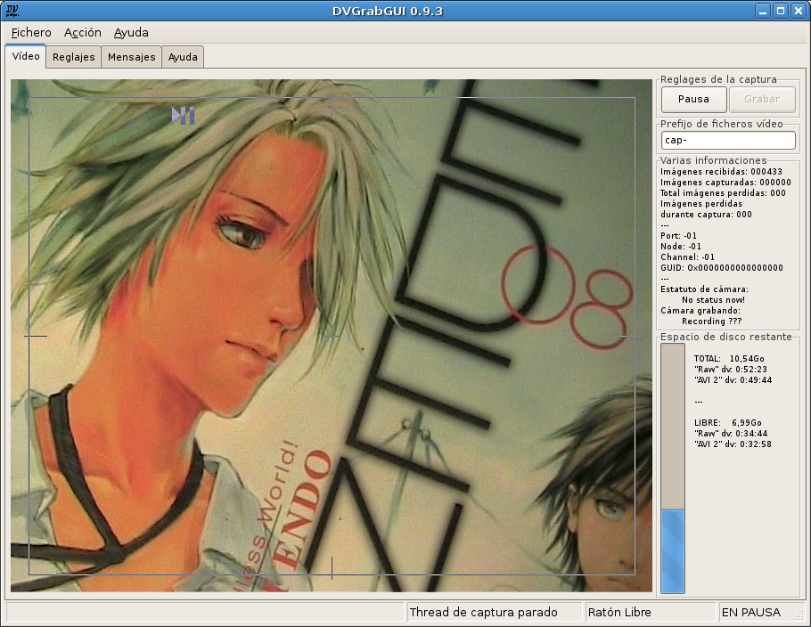

Pre: Referencias → Menús --- ↑Home --- Sig: Referencias → Ventana Vídeo (modalidad "Pequeña")
DVGrabGUI 0.9.4
Referencias → Ventana Vídeo
Ésta es la ventana principal, donde puede ver el flujo dv, y encender/parar
la captura…

-
Los cuatro uñeros mayores
-
La ventana "Vídeo"
Ésta es la mayor ventana, donde enciende/para la captura dv, y
controla lo que está grabando.
-
La ventana "Reglajes"
Aquí puede ajustar (casi) todos los reglajes sobre la captura y la
interfaz.
Ventana dividida en tres subuñeros:
Captura,
Material, y
GUI.
-
La ventana "Mensajes"
Esta ventana muestra todos los mensajes mandados por DVGrabGUI (o la
wxWidgets debajo!).
Fíjese en que esos mensajes están también registrados en un fichero "log"
(~/.dvgrabgui/dvgrabgui.log). Mandelo con cualquier
informe de bug, ¡por favor!
-
La ventana "Ayuda"
¡Muestra esta ventana!
Fíjese en que este uñero sólo es disponible con wxWidgets 2.8; con
wxWidgets 2.6, la ayuda aparece en una ventana aparte…
-
La ventana "Vídeo"
-
Visualización Vídeo
Esta ventana muestra el flujo dv cuando el thread de capture está
encendido.
Le permite encender/parar el thread de captura (izquierda-clic en la
parte izquierda de la ventana), y…
Le permite encender/parar la grabación (izquierda-clic en la parte
derecha de la ventana).
-
Barra de estatuto
-
Primera zona: Aquí están informaciones generales
(ayuda de entradas de menú, …).
-
Segunda zona: Aquí puede ver el estatuto del thread de
captura.
-
Tercera zona: Aquí puede ver si el ratón está capturado
o no.
-
Cuarta zona: Aquí puede ver el estatuto de la captura
(grabando o en pausa).
-
Botón Pausa/Stop
Botón para encender/parar el thread de captura (como la parte de
izquierda de la ventana vídeo).
-
Botón Grabar/Pausa
Botón para encender/parar la grabación dv (como la parte de derecha
de la ventana vídeo – ¡desactivado cuando el thread de
captura no está encendido!).
-
Zona de texto "Prefijos de ficheros vídeo"
Mete aquí el prefijo que quiere en todos los nombres de sus ficheros
vídeo (por ej. capt- producirá ficheros como
capt-0001.avi, capt-0002.avi, etc.).
Fíjese en que tiene más opciones sobre nombres de fichero en la
ventana de reglajes.
-
Zona de texto "Varias informaciones"
Este texto le da informaciones "materiales": imágenes
recibidas/grabadas/perdidas durante la grabación, Port/Node/Channel/GUID
de la conexión dv establecida, y el estatuto de la cámara dv-relatado.
-
Espacio de disco
Esta zona le da informaciones sobre espacio de disco total/restante
(para el punto de montaje (???) del directorio donde registra sus
ficheros vídeo grabados).
Pre: Referencias → Menús --- ↑Home --- Sig: Referencias → Ventana Vídeo (modalidad "Pequeña")
(c) 2006, 2007, 2008 Bastien Montagne (montagne29 en wanadoo punto fr).
Proyecto albergado en sourceforge.net/projects/dvgrabgui.